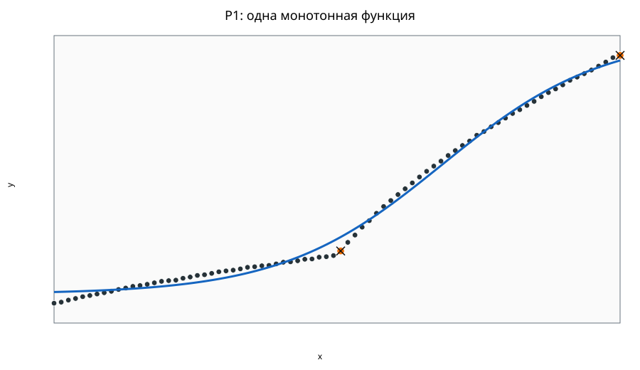
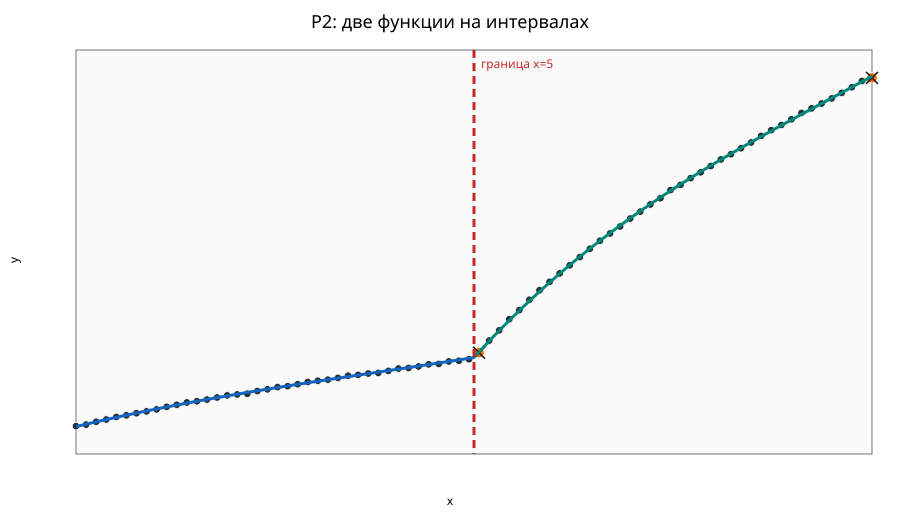
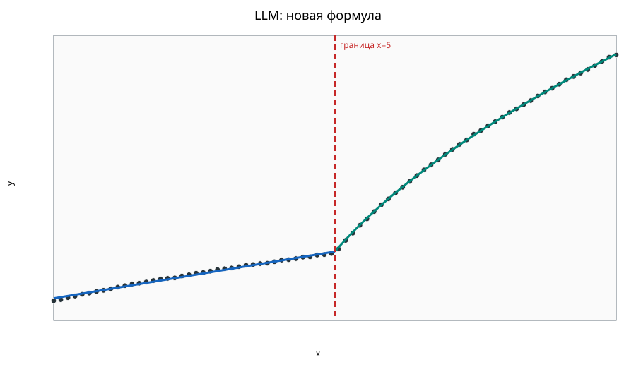

Состояние решения: CLEAR_PRACTICAL_UPLIFT.
Предупреждения: LLM_TRAINING_SUMMARY_DISCLOSED
Использовано 80 из 80 строк; пропущено 0. Уникальных x: 80.
P1 и P2 получены полным алгоритмическим поиском по реестру.
LLM предлагает новые выражения; их параметры оптимизируются численно. Статус LLM: ACCEPTED.
Максимум две ветви, полиномиальная степень ≤3, монотонность на всём интервале, непрерывность стыка, баланс 40/60 и коэффициенты с точностью 0.001.
Refit R²: 0.996
OOF R²: 0.995
f(x)=2.029+6.474/(1+exp(-7.046*(((x-0.000)/10.000)-0.686)))
Refit global R²: 1.000
OOF R²: 1.000
f(x)=1.792+1.707*((x-0.000)/5.000)-0.849*((x-0.000)/5.000)^2+0.370*((x-0.000)/5.000)^3 for x<=5.000; 3.020+7.815*((x-5.000)/5.000)-4.505*((x-5.000)/5.000)^2+1.690*((x-5.000)/5.000)^3 for x>5.000
| Интервал | n | доля | R² |
|---|---|---|---|
| left | 40 | 0.500 | 0.999 |
| right | 40 | 0.500 | 1.000 |
Refit R²: 0.988
Ветвей: 1; параметров: 5.
f(x)=1.985+6.428*(((sqrt(1+(5.133*((1.394*((x-(0.0))/(10.0-(0.0))))^3)))-1)+(0.238*((x-(0.0))/(10.0-(0.0)))))/((sqrt(1+(5.133*((1.394*1)^3)))-1)+(0.238*1)))
Обучение: 64 точек; проверка: 16. Группы одинаковых x не разделяются. LLM не видела контрольные точки и их оценки. R² считается относительно среднего обучающей выборки. Это оценка интерполяции одного разделения; она отличается от OOF выше. Сохранённые итоговые модели повторно обучены на всех точках.
| Вариант | R² | RMSE | MAE | Статус |
|---|---|---|---|---|
| P1 | 0.995 | 0.145 | 0.133 | AVAILABLE |
| P2 | 1.000 | 0.010 | 0.007 | AVAILABLE |
| LLM | 0.991 | 0.190 | 0.167 | AVAILABLE |
Все результаты сравнения · Модель P1 · Модель P2



Relative MSE uplift: 0.987; bootstrap 90% interval: [0.982, 0.990].
Флаги основаны на grouped OOF-остатках рекомендуемой процедуры; они ничего не удаляют.
| row_id | OOF-прогноз | OOF-остаток | действие |
|---|---|---|---|
row-000041 | 3.1509250624357463 | -0.04550285576245172 | review_only |
row-000080 | 8.039479329736498 | -0.04850829681877045 | review_only |